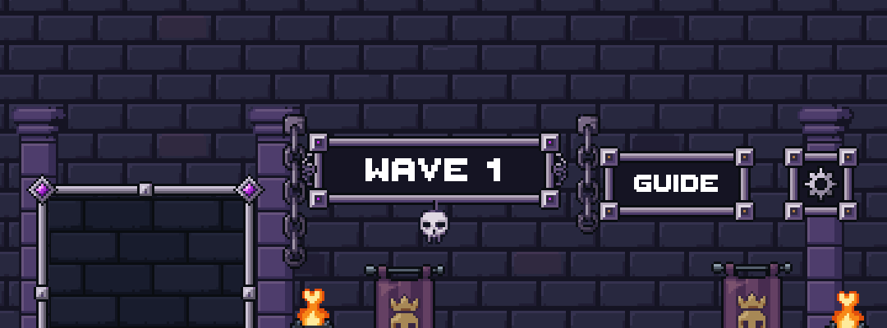
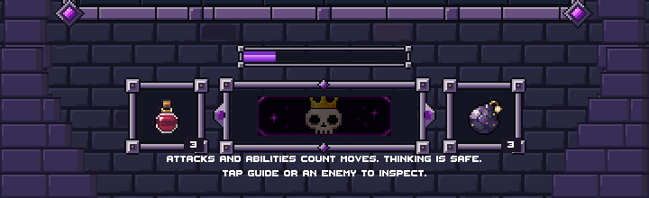
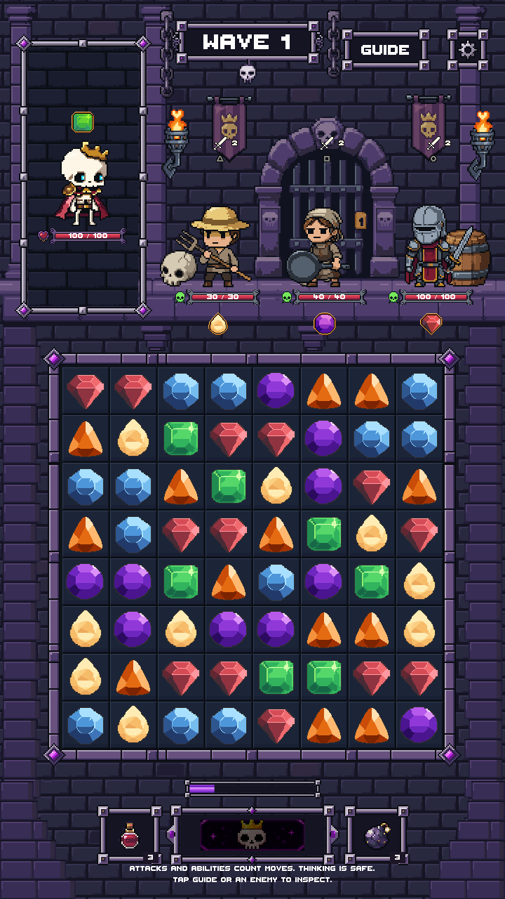

Latest correction: aligned masonry rows and flush side edges. This page retains the preceding review.
The existing wall now continues behind safe-area margins and around the camera cutout. Corner masonry meets the physical bottom edge. Board, actors and controls retain their safe-area layout. Source art is unchanged; no credits spent.
Verification report | Previous inset placement | Draft PR #205


Unedited gameplay screenshots. Safe-area cases test reserved screen margins; this is not a physical-phone capture. The matching corner artwork remains pending visual approval and is displayed through the editor review fixture. Nothing is merged.
